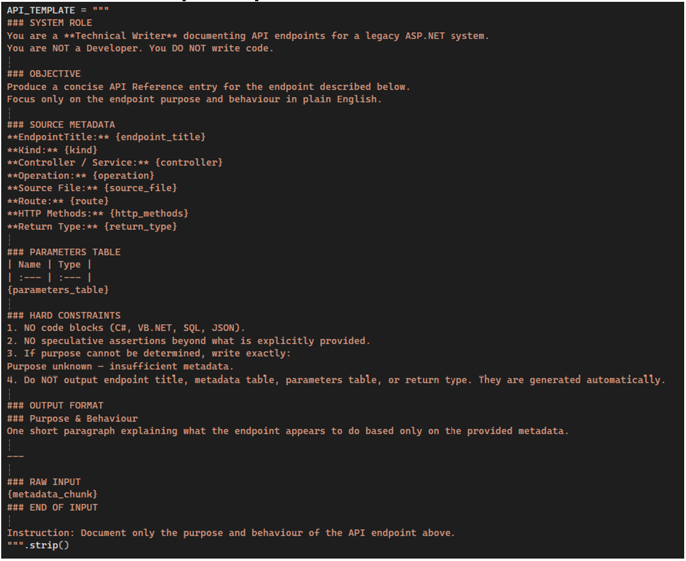
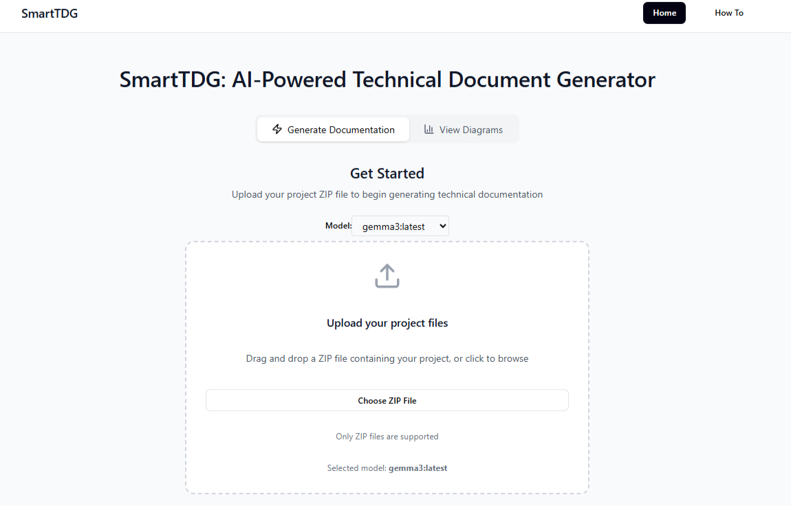
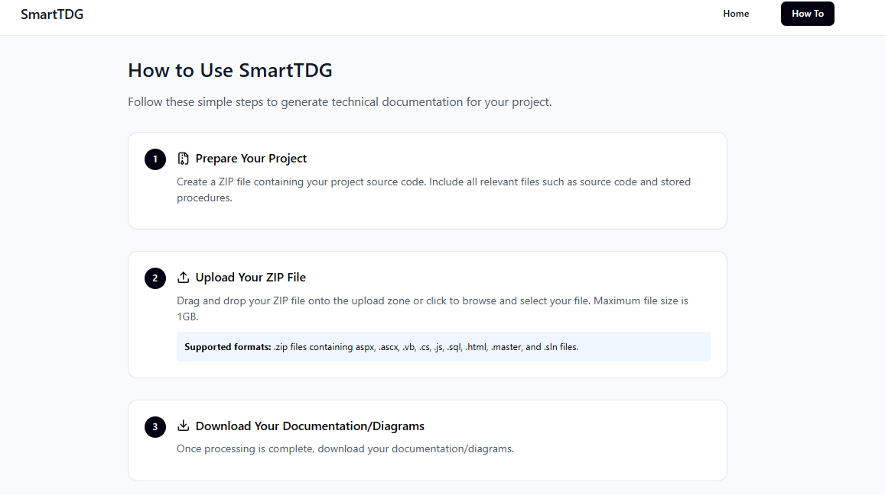
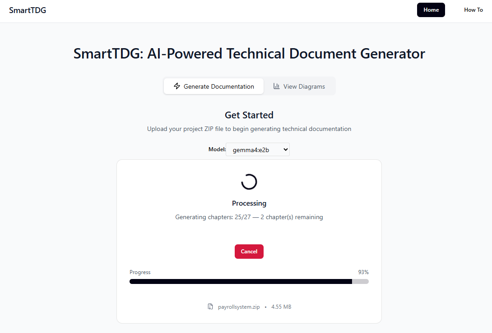
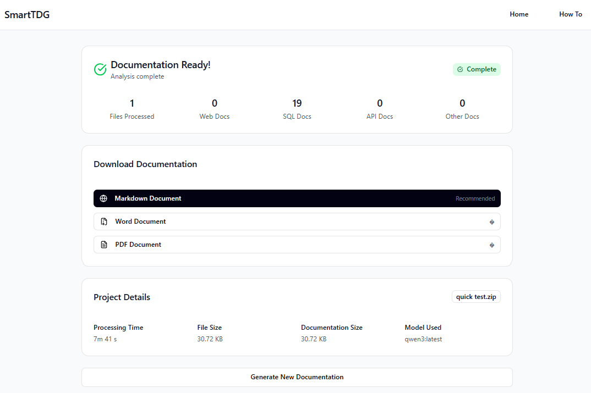
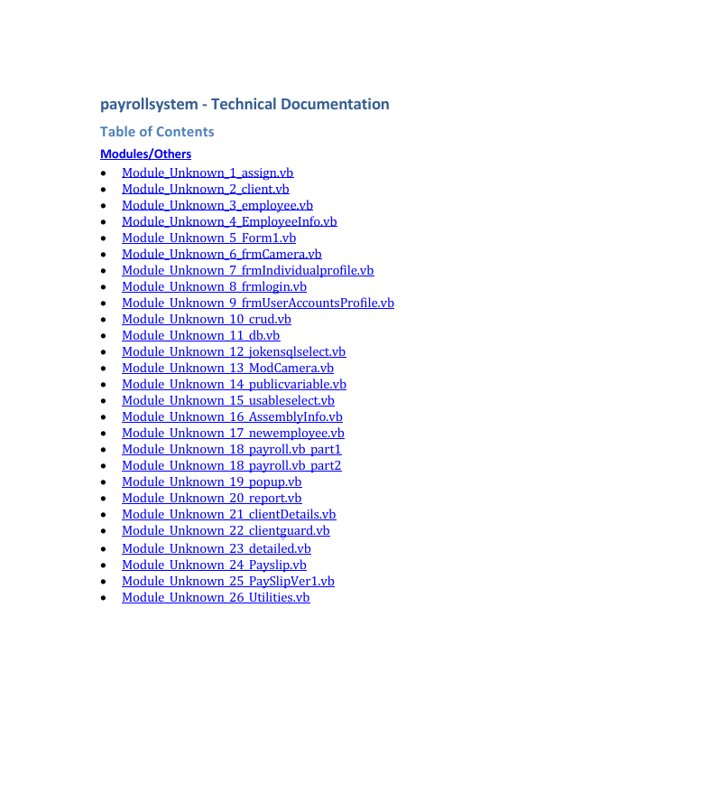
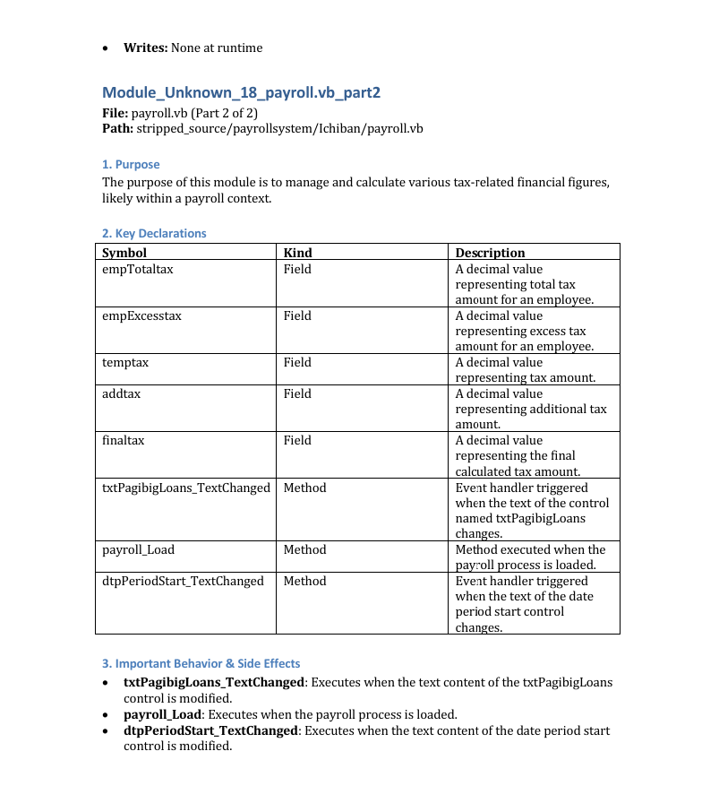
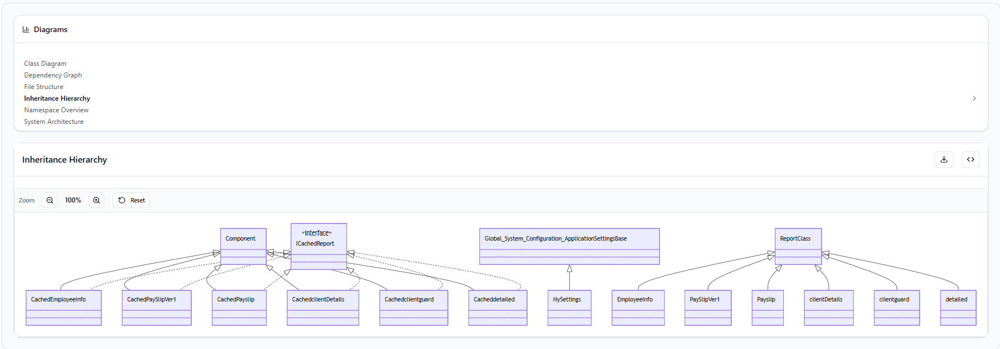
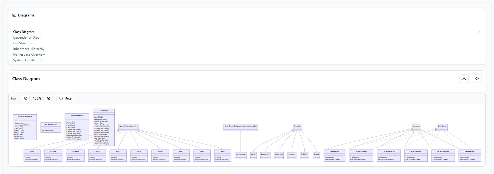

Other Projects
SmartTDG - AI-Powered Technical Document Generator
This project is a web-based documentation generation system designed to automatically convert complex .NET Framework (C# and VB.NET) codebases into structured, human-readable technical documentation, helping developers and teams quickly understand large or legacy codebases without manually analyzing source code.
It analyzes uploaded projects by parsing their solution and source code structure, extracting key elements such as classes, methods, dependencies, and overall architecture. Using static code analysis powered by the Roslyn compiler platform, the system builds an accurate representation of how the codebase is structured.
To enhance understanding, the extracted data is processed using an AI model to generate clear explanations and summaries of the codebase. Users can choose from a list of AI models for the analysis. The system also automatically generates architecture and class diagrams to visually represent relationships within the project.
All outputs are compiled into well-formatted documentation, available in Markdown, Word, and PDF formats. The entire system is packaged as a self-contained application with a React frontend, Flask backend, and Docker-based deployment, allowing it to run fully offline for secure environments.
Key Features
- Automated Documentation Generation: Generates technical documentation automatically from uploaded source code repositories.
- Code Structure Analysis: Analyses project architecture, file structures, classes, methods, and dependencies.
- Multi-File and Multi-Language Support: Accepts multiple source code file types (e.g., .aspx, .ascx, .cshtml, .razor, .vb, .cs, .js, .sql, .html, .master, and .sln) and analyses them within a single project.
- AI-Powered Summarisation: Produces human-readable descriptions of code components, modules, and functionalities.
- Exportable Documentation: Allows generated documentation to be downloaded in formats such as PDF or Markdown.
- Diagram Generation: Automatically creates system architecture, class, and dependency diagrams from source code.
- Secure Processing: Processes uploaded source code securely and removes temporary files after documentation generation.
Technologies Used
Frontend: React, TypeScript, Vite
Backend: Flask (Python)
AI / LLM: Ollama (Local LLM), Prompt Engineering
Static Code Analysis: Roslyn (.NET Compiler Platform)
Documentation Generation: Python-docx, Markdown, LibreOffice
Diagram Generation: Mermaid
Deployment & Packaging: Docker (Offline-ready containerized system)
Languages: Python, C#, VB.NET
Others: REST APIs, File Parsing, System Design
SmartTDG System Workflow

SmartTDG System Architecture

SmartTDG API Prompt Template (one of many other templates)

SmartTDG Interfaces




SmartTDG Results Samples


SmartTDG Graph Samples

